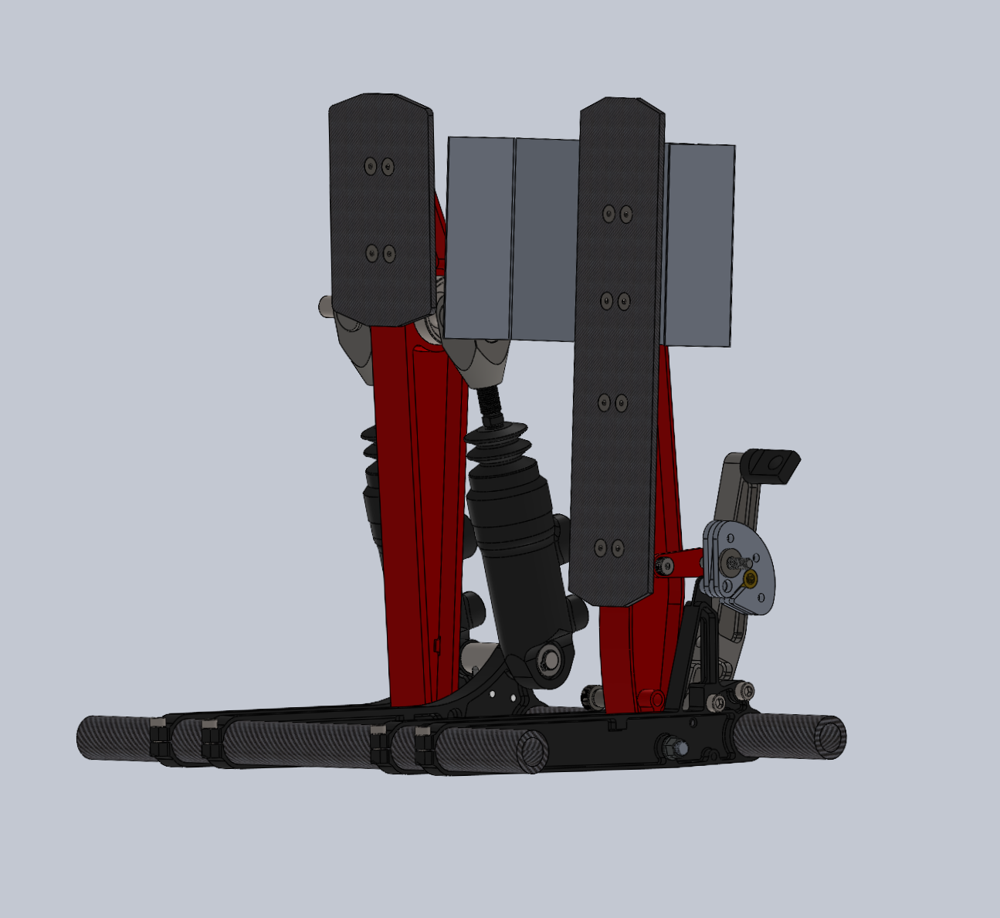
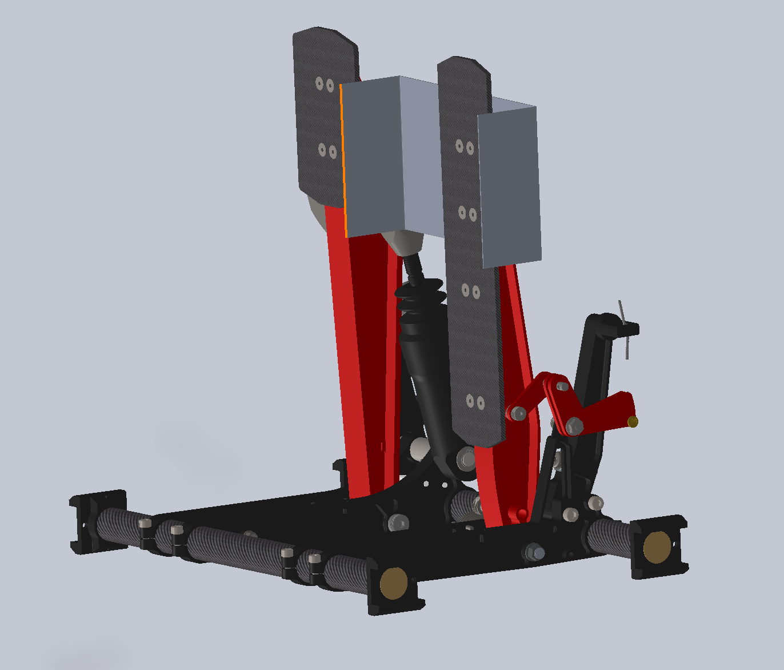

Pedal Box Redesign & Optimization
My primary role was to assemble the new pedalbox and conduct a comprehensive motion study. The objective was to analyze the kinematics of each pedal under applied force, ensuring all linkages operate smoothly without interfering with surrounding components. This project combines the redesign of the new throttle linkage with its assembly and motion analysis. Currently, the linkage has a minor clash with another component, and I am in the process of iterating the design to resolve this issue.
PEDALBOX ASSEMBLIES
2025 Assembly
2024 Assembly
The pedal box is a critical driver interface, responsible for translating the driver's inputs into braking and acceleration. This project focused on the design and evolution of the pedal box assembly, with a key improvement being the redesign of the throttle linkage. The new design enhances reliability and provides a more direct and responsive feel, ensuring the linkage can withstand the rigors of competition without failure.
Redesigning the Throttle Linkage
Previous Design Flaw
The old linkage was prone to failure. Due to its geometry, the throttle cable would create significant friction against the body of the linkage. Over time, this constant rubbing would wear down the material, causing the linkage to weaken and eventually break.
Improved Solution
The shape was redesigned to be more circular. A dedicated channel guides the throttle cable directly into a gap, preventing it from touching the linkage body. This eliminates the friction and wear, ensuring the linkage remains strong and unbroken throughout its service life.